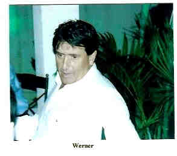
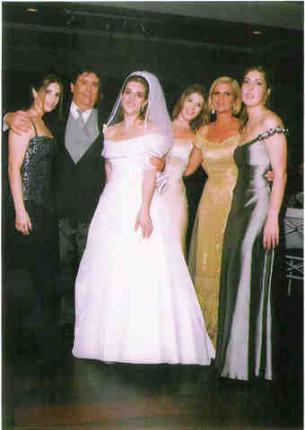

Werner Gerhardt Júnior
- Nascido em: 4 Abr 1945, São Paulo, Sp
- Casamento: Filomena Natrielli em 4 Dez 1969
- Falecido: 9 Abr 2003, São Paulo, Sp com 58 anos de idade

 Notas Gerais: Notas Gerais:
Devemos aqui registrar a linda mensagem que nos enviou a filha Patrícia (Pati) a respeito do seu pai Werner, que partiu e certamente está no convívio com Deus.
Meu pai foi o "PAIZÃO". Ele era uma pessoa de coração MUITO BOM e que acreditava que todos eram igual a ele. Vivia sempre preocupado com a família e o trabalho dele - 2 coisas que ele amava. Tudo que fazia era pensando na minha mãe e em nós 4 (mais meus avós ... ... etc. ... Sempre bom para todo mundo!) . Sempre tentou nos dar tudo do bom e melhor: com dificuldade, trabalho e dedicação. Ele sabia conversar de tudo, e quando começava a falar era uma delícia ouvir. Eu sempre ficava pensando como que uma pessoa podia saber de tanta coisa diferente. Ele sempre teve muita boa vontade e não tinha preguiça. Ajudava sempre todo mundo que precisava, às vezes esquecendo que ele precisava se preocupar mais com ele mesmo. Muitas pessoas se aproveitavam da bondade dele, e isto me deixava muito triste. Ele faz muita falta. Eu não o esqueço por 1 minuto sequer, e ainda sofro muito por ele não ter conhecido meu filho. Meu pai tinha 4 filhas e 2 netas. Cinco dias antes dele morrer, fiquei sabendo que estava grávida e quando demos a notícia, ele perguntou ao Rapha se agora viria um menino. No dia que soube do sexo do Pedro, fiquei feliz de um lado e senti um vazio enorme por outro; e até hoje me "culpo" por não ter dado um neto ao meu pai antes dele morrer (antes dele morrer, eu sempre achei que eu daria um neto a ele). Fico mais triste ainda que o Pedro não teve a oportunidade de conhecer um avô dele, pois além de ser um super pai, ele era um super avô (minha sobrinha mais velha, que teve mais contato com ele, tinha 2 anos quando ele morreu e até hoje fala dele, lembra dele e diz que o ama). Todo dia quando estou brincando com o Pedro ou quando ele faz alguma coisa nova, eu fico imaginando como o meu pai ficaria se estivesse aqui (as caras que ele iria fazer, a alegria nos olhos dele etc. - o que me deixa triste e com mais saudades ainda).
Eventos notáveis em Sua vida foram:
.jpg "Aniversário do meu pai, eu,e mãe (506 KB)
Aniversário do meu pai, eu e mãe
(Clique na Foto para vê-la no Tamanho Original)")
• fotos: Aniversário do meu pai, eu,e mãe.
.jpg "(471 KB)
(Clique na Foto para vê-la no Tamanho Original)")
• fotos: aniversário Filó de 50 - Ale, dad, eu, Dani, Ieié, mom.

• fotos: Werner.

• fotos: meu casamento - Ale, pai , Pati, Ieié, mãe, Dani.
Werner casad[:o::a] Filomena Natrielli, filha de Carmine Natrielli e Izabel Petrella, em 4 Dez 1969. (Filomena Natrielli nasceu em em 1 Abr 1948 em São Paulo, Sp.)
|
_DAD.jpg "(481 KB)
(Clique na Foto para vê-la no Tamanho Original)")